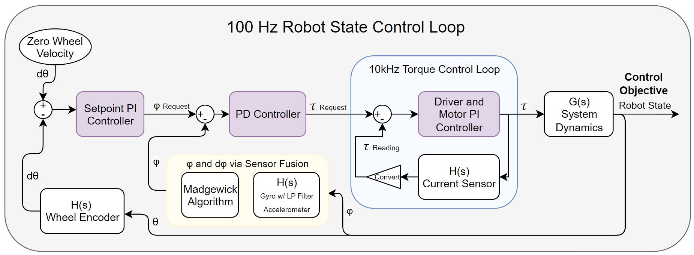

Dynamics and Control
Introduction
The following is a demonstration of the derivation for the equations of motion for a single degree of freedom reaction wheel inverted pendulum. The approach used is energy methods via the Lagrangian using classical mechanics.
An automated derivation sequence using MATLAB is presented, which allows for parsing the equations of motion for an arbitrary system such as a 4-DOF unicycle robot. The code for the auto-derivation has been tested by hand against known solutions in the literature, as explored by (Brevik 2017), (Montoya and Gil-González 2020).
Problem Description

The inverted pendulum is attached to a hinge point at A and has a flywheel mounted to a motor at C. The analysis of the problem involves two rigid bodies: the pendulum arm and the spinning flywheel. The parameters of importance for each are
\(l\), the distance from the rotation point A to the center of mass of the body.
\(I\), the moment of inertia of the body about its centroid.
\(m\), the total mass of the body.
We use the subscript \(_p\) for pendulum properties and \(_w\) for wheel properties. \(l_p = \bar{AB}\), \(l_m = \bar{AC}\)
The properties in practice are determined experimentally or with the assistance of CAD.
Since we are restricted to the 2D plane in this single degree of freedom problem, there is only a single moment of inertia instead of a tensor like in the case of 3D.
We also specify our general coordinates for the problem. Importantly the angle \(\theta\) is chosen relative to the pendulum arm since this is what is measurable by an encoder on the joint. The angle \(\phi\) is measured relative to the vertical, a configuration suitable for either an encoder at \(A\) or an IMU referencing gravity.
Parameter Measurement
Mass and Center of Mass Measurements
The mass and center of mass (CM) were measured using a lab scale and a balancing method, respectively.
Flywheel: The wheel and rings mass (denoted as \(m_w\)) was measured to be 346g. The CM of the wheel from the pendulum hinge (denoted as \(l_w\)) is 180mm. This was measured in CAD and also with a ruler.
Pendulum and Motor: The combined mass of the pendulum and motor with stator (denoted as \(m_p\)) was measured to be 531g. The CM of the pendulum with motor and stator (denoted as \(l_p\)) is 100mm. The pendulum CM is found by balancing the apparatus with removed flywheel overtop of a fulcrum and finding the stable resting point position.
Inertia Calculations
The moment of inertia for each component was calculated using the parallel axis theorem and the physical dimensions provided by CAD models and direct measurement.
Wheel Inertia
The wheel inertia (denoted as \(I_w\)) was found by comparing the CAD weight to the measured weight of the flywheel to find agreement: \[I_w = 725\ \text{kg}\cdot\text{mm}^2\] In particular the metal rings were weighed and set to be the same weight in CAD which is the most influential part of the moment in question.
Pendulum Inertia
The pendulum moment of inertia (denoted as \(I_p\)) is a composite value derived from the inertia of individual components:
Battery: The battery contributes an inertia of: \[I_{\text{battery}} = \frac{1}{12} \cdot 0.185 \cdot (70^2 + 35^2) + 0.185 \cdot 50^2 = 446\ \text{kg}\cdot\text{mm}^2\]
Pendulum Arm: The corrected inertia for the pendulum arm is: \[I_{\text{arm}} = 346\ \text{kg}\cdot\text{mm}^2 + 0.102 \cdot 45^2 = 552\ \text{kg}\cdot\text{mm}^2\]
Motor and Mount: The combined inertia for the motor and mount is: \[I_{\text{motor}} = 0.5 \cdot 0.206 \cdot 30^2 + 0.206 \cdot 75^2 = 1251.75\ \text{kg}\cdot\text{mm}^2\]
The total pendulum inertia is then calculated as the sum of the components: \[I_p = I_{\text{battery}} + I_{\text{arm}} + I_{\text{motor}} = 2250\ \text{kg}\cdot\text{mm}^2\]
Lagrangian Derivation
Our generalized coordinates are \[\vec{q} = \begin{bmatrix} \varphi \\[0.3em] \theta \end{bmatrix}, \quad \text{and} \quad \frac{d}{dt}\vec{q} = \dot{\vec{q}} = \begin{bmatrix} \dot{\varphi} \\[0.3em] \dot{\theta} \end{bmatrix}\]
We derive the kinetic and potential energy of the system first:
Kinetic Energy
\[\begin{aligned} T &= T_p+T_w \\ T_p &= \frac{1}{2}(\underbrace{I_p + m_pl_p^2}_{\text{Parallel Axis Theorem}})\dot{\varphi}^2\\ T_w&=\frac{1}{2}m_w(\underbrace{l_w\dot{\varphi}}_{\text{Speed of CM}})^2 + \frac{1}{2}I_w(\underbrace{\dot{\varphi}+\dot{\theta}}_{\text{net rotation earth frame}})^2\\ T_{net} &= \frac{1}{2} \left(I_p + m_p l_p^2 + I_w + m_w l_w^2\right) \dot{\varphi}^2 + \frac{1}{2} I_w (\dot{\varphi} + \dot{\theta})^2 \\ &= \frac{1}{2} \left(I_p + m_p l_p^2\right) \dot{\varphi}^2 + \frac{1}{2} I_w \left(\dot{\varphi}^2 + 2\dot{\varphi}\dot{\theta} + \dot{\theta}^2\right)\\ T_{net}&=\frac{1}{2} [\dot{\varphi}, \dot{\theta}] \begin{bmatrix} I_p + m_pl_p^2 + I_w + m_wl_w^2 & I_w \\ I_w & I_w \end{bmatrix} \begin{bmatrix} \dot{\varphi} \\ \dot{\theta} \end{bmatrix} \end{aligned}\]
This gives the form using the inertia matrix M, note the matrix is always symmetric.
Potential Energy
The potential energy is taken by projecting the position of the center of masses onto the vertical axis using \(\cos(\varphi)\), noting that the angle \(\theta\) has no impact on the potential since the wheel is radially symmetric. \[U = (m_pl_p + m_wl_w)g \cos (\varphi) = m_0 \cos (\varphi)\] We can simplify future equations by assigning an equivalent variable \(m_0 = (m_p l_p + m_w l_w)g\)
This gives the complete Lagrangian \[\mathcal{L}(\varphi,\theta,\dot \varphi,\dot \theta)= KE - PE = \frac{1}{2}\mathbf{\dot q}^{T}\mathbf{M}\mathbf{\dot q}-m_0cos(\varphi)\]
Equations of Motion
The Euler-Lagrange equations for each coordinate will inform the equations of motion: \[0 = \underbrace{\frac{\partial \mathcal{L}(q,\dot{q},t)}{\partial q} - \frac{d}{dt}(\frac{ \partial \mathcal{L}(q,\dot{q},t)}{\partial \dot{q}}}_{\text{Euler-Lagrange Equation}})\]
The non-conservative force of the torque is incorporated by having the equation not sum to zero, but instead the sum of non-conservative forces/torques. The details of this style of derivation can be found in (Brevik 2017) Section 3.3.2.
These equations can be derived by hand, but all of the necessary information for the problem is already encoded in the starting Lagrangian. All equations of motion that follow are merely an algorithmic process, one that is prone to errors as well. For efficiency, it is preferable to devise a method to automatically differentiate.
Matlab Derivation
The required files to run this code are included at https://github.com/Team-2411-RL-Unicycle/pid-control The automated E-L solver uses a modified version of a file made by (Veng 2023). It is incorporated into the RWIPpid_derivation.m file. The derivation technique is validated against the equations derived by (Brevik 2017).
The first step is to define symbolic variables for all of the parameters, states, and inputs
syms mp lp Ip mw lw Iw real
params = [mp, lp, Ip, mw, lw, Iw];
% Define numerical values for the parameters
values = [.531, 0.100, 0.002250, .346, 0.180, 0.000725];
g=9.81;
% State variables
syms phi theta dphi dtheta real
q = [phi, theta];
dq = [dphi, dtheta];
% Input
syms tau real
% Potential energy mass
m0 = (mp*lp + mw*lw)*g; % Effective U=mgh for combined parts
% Mass matrix
M = [(Ip + mp*lp^2 + Iw +mw*lw^2), Iw;
Iw, Iw];
lagrangian = (1/2)*([dphi, dtheta])*M*([dphi, dtheta]') - m0 * cos(phi);
% Non-conservative forces in each coordinate q
Q = [0, tau];The Lagrangian and its non-conservative forces are fully defined now. The equations are solved using the modified imported library and the solution equations for each second time derivative is solved giving \(\frac{d}{dt}\dot{q}\), these solutions can be packed into a single array to form a matrix.
[eqs, ddq] = EulerLagrange(q,dq,lagrangian,Q);
% Explicit equations:
exp_eqs = ddq == eqs;
% Solve equations to isolate ddphi and ddtheta
ddqSolutions = solve(ddq == eqs, ddq);
% Convert solutions to cell array
ddqSolutionEquations = struct2cell(ddqSolutions) ;
ddqArray = [ddqSolutionEquations{:}].';Derived Equations of Motion
Once we have \(n\) 2nd order ODEs for \(n\) general coordinates and their \(n\) general time derivatives we have enough to make a first order system of ODEs that characterize the system. The time-domain non-linearized result from the derivation is given below.
\[\frac{d}{dt}\vec{x} = \vec{G}(\vec{x}, t) = \begin{bmatrix} d\varphi \\ d\theta \\ \frac{g_0 l_p m_p \sin(\phi) - \tau + g_0 l_w m_w \sin(\phi)}{m_p l_p^2 + m_w l_w^2 + I_p} \\ \frac{m_p \tau l_p^2 - I_w g_0 m_p \sin(\phi) l_p + m_w \tau l_w^2 - I_w g_0 m_w \sin(\phi) l_w + I_p \tau + I_w \tau}{I_w (m_p l_p^2 + m_w l_w^2 + I_p)} \end{bmatrix}, \quad x = \begin{bmatrix} \varphi \\ \theta \\ \dot{\varphi} \\ \dot{\theta} \end{bmatrix}\]
Note that there is no explicit time dependence in the function \(G\) the inverted pendulum dynamics and rigid body characteristics are constant over time. From inspection of the solutions we see that \(\theta\), the angle of the wheel does not play a role in the function \(G\) and can be removed entirely if desired.
These system dynamics can be used to create a time-domain non-linear simulation using Euler’s method to get numerical solutions. Friction can be added as a damping coefficient \(\beta\) such that we superimpose \(\ddot{\varphi} = - \beta \dot{\varphi}\) onto the solution for example.
Controls Derivation
Now that the system dynamics are recovered we want to work in the Laplace domain for control. To do so, we need to get a linearized form of this non linear vector equation. This is similar to defining a first-order approximation to a single variable function: \(f(x) \approx f(x_0) + f'(x_0)\cdot (x_0 - x)\). In this case the linearation happens about a vector in state-space and we use the Jacobian as the multivariate generlization of the first derivative.
For more information on this process refer to
Berkley Designing Information Devices and Systems II (University of California, Berkeley 2021)
Caltech Jacobian Linearization (California Institute of Technology 2002)
Linearization
We wish to convert \[\vec{G}(\vec{x}, t) \approx Ax + Bu\] via linearization about the operating point. We choose the upright position as the target and note that \(\varphi\) is the only variable present in \(G\). \(\hat{\vec{x}}=0\) is the chosen linearization point:
\[\frac{d}{dt}\vec{x} \approx \hat{\vec{x}} + \left. \text{Jacobian}\{\vec{G}(\vec{x}, t)\} \right|_{\vec{x}=\hat{\vec{x}}} (\vec{x}-\hat{\vec{x}}) = \left. \Big(A\Big) \right|_{\vec{x}=\hat{\vec{x}}} \vec{x}\]
We perform a similar linearization to get the effect of the system inputs by taking the Jacobian with respect to \(\tau\). The two combined give the cannonical \(\frac{d}{dt}x = Ax + Bu\) of controls engineering. The final step is to take the Laplace transform of the entire equation and then solve for the transfer function between the system inputs \(u\) or in this case \(\tau\) and the observables we want (mainly the system state \(x\)) but this generalizes to any observable that is a function of \(x\) and \(u\)
State Vector \[{\mathbf{x}} = \begin{bmatrix} x_1 \\ x_2 \\ \vdots \end{bmatrix}\] Input Vector \[{\mathbf{u}} = \begin{bmatrix} u_1 \\ u_2 \\ \vdots \end{bmatrix}\] Output Vector \[{\mathbf{y}} = \begin{bmatrix} y_1 \\ y_2 \\ \vdots \end{bmatrix}\]
State Equation \[\dot{\mathbf{x}} = \begin{bmatrix} \dot{x}_1 \\ \dot{x}_2 \\ \vdots \end{bmatrix} = \mathbf{A}{\mathbf{x}} + \mathbf{B}{\mathbf{u}}\] Output Equation \[{\mathbf{y}} = \mathbf{C}{\mathbf{x}} + \mathbf{D}{\mathbf{u}}\]
State Transition Matrix \[\mathbf{\Phi} = (s\mathbf{I} - \mathbf{A})^{-1}\] Transfer Functions \[\frac{{\mathbf{y}}}{{\mathbf{u}}} = \mathbf{C}\mathbf{\Phi}\mathbf{B} + \mathbf{D}\]
We solve for the transfer matrix \(y = Gu\) at \(x=0\), noting that in our case \(y=x\)
MATLAB Derivation
% Phi, dPhi, dTheta
X = [q(1)' ; dq']
% The inputs are non-zero entries of Q (non-conservative forces)
U = Q(Q ~= 0);
% Vector functionn for the derivative of the state vector
dX = [dphi; ddqArray]
% Compute the Jacobian matrices to get nonlinear state matrices dX = Ax + Bu
A = jacobian(dX, X);
B = jacobian(dX, U);
% Substitute or linearize about an equilibrium point
% Define equilibrium point (for example, all zeros)
x0 = [0; 0; 0];
% Substitute equilibrium values x0 into A and B
Aeq = subs(A, X, x0)
Beq = subs(B, X, x0)
% U to X transfer function
% dX = Ax + Bu implies sX = Ax + Bu, solve for x = Gtf*u
syms s
Gtf = (s*eye(length(X)) - Aeq)^(-1)*BeqSystem Transfer Function
\[\begin{pmatrix} \varphi(s)\\ \dot{\varphi}(s)\\ \dot\theta(s) \end{pmatrix}= \begin{pmatrix} -\frac{1}{{m_p l_p^2 s^2 - g_0 m_p l_p + m_w l_w^2 s^2 - g_0 m_w l_w + I_p s^2}} \\ -\frac{s}{{m_p l_p^2 s^2 - g_0 m_p l_p + m_w l_w^2 s^2 - g_0 m_w l_w + I_p s^2}} \\ \frac{{m_p l_p^2 + m_w l_w^2 + I_p + I_w}}{{I_w s (m_p l_p^2 + m_w l_w^2 + I_p)}} + \frac{{g_0 l_p m_p + g_0 l_w m_w}}{{s (m_p l_p^2 + m_w l_w^2 + I_p)(m_p l_p^2 s^2 - g_0 m_p l_p + m_w l_w^2 s^2 - g_0 m_w l_w + I_p s^2)}} \end{pmatrix} \tau(s)\]
We note that for our control problem we are trying to control the angle \(\varphi\) using torque, so the function of interest is the upper row equation:
\[\varphi(s) = \Big(-\frac{1}{{m_p l_p^2 s^2 - g_0 m_p l_p + m_w l_w^2 s^2 - g_0 m_w l_w + I_p s^2}}\Big) \tau(s)\]
Or rearranging we see that we have function of the form \(\frac{1}{s^2+a^2}\): \[\varphi(s) = \left(-\frac{1}{s^2(m_p l_p^2 + m_w l_w^2 + I_p) - m_0}\right) \tau(s)\]
This is a function with one pole in the RH plane making it unstable.
Controls Policy
There are actually two objectives that are necessary to keep the pendulum balanced upright.
The angle \(\varphi\) should be minimized to 0 degrees where possible.
The wheel velocity can not exceed the maximum for the motor configuration.
The wheel velocity in a balancing configuration can be controlled by biasing which side of the unstable equilibrium the pendulum is on. With a functioning and responsive control for \(\varphi\), commanding the robot to hold position on one side of the equilibrium will cause a build-up of torque in one direction. This can be used to apply torque opposite to the direction of the spinning wheel to slow it down.

We read the wheel speed from the wheel encoder and get an error for how far off from zero velocity it is. This is fed through to a PI controller that updates the setpoint objective for the pendulum angle to counteract the velocity. This request is sent to a PD controller which functions off the error between the requested \(\varphi\) and the current \(\varphi\) as read by the the sensors. Finally this torque request is passed to the motor driver which has a high frequency feedback loop to apply the requested torque.
PD Controller for Pendulum Angle
The PD Controller for \(\varphi\) is tuned using the assumption that the torque requests have little delay before reaching the intended value. This is because the motor controller is running at 100 times faster than the main control loop frequency of 100Hz. Thus we model the feedback loop of Controller -> \(G(s)\) -> \(H(s)\) Sensor Fusion. The sensor fusion and torque request mechanism are modeled as a delay of one \(100Hz\) control cycle.
A PD controller is selected because of the dynamic setpoint that is being controlled by the cascade arrangement. If we were to include an I term then the controller would not be memoryless and would have undesirable response characteristics to the dynamic \(\varphi\) setpoint being requested by the higher level controller. The PD control model is a robust choice for a controller for this robot state parameter, (Brevik 2017).
The MATLAB pid tuner is used to get feasible starting values based on this loop. The experimental parameters applied to the robot were found to closely match the predicted values.
PI Controller for Wheel Velocity
The PI controller is tuned heuristically once a good underlying PD controller for the angle is found. A starting value of around \(K_p = 0.1\) was found to be helpful. Blending of integral term with a corresponding reduction of \(P\) is one approach to further tuning.